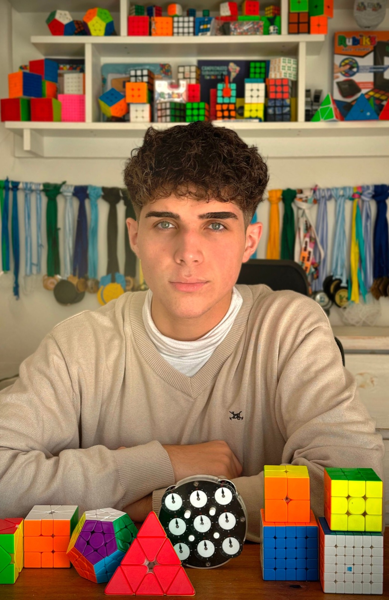
Episodio 1
Gael Lapeyre
Tiene 17. Compite en cubo. Escribió dos libros. Trabajo con él.
Para Spotify Latam
Un podcast de entrevistas largas, en español.
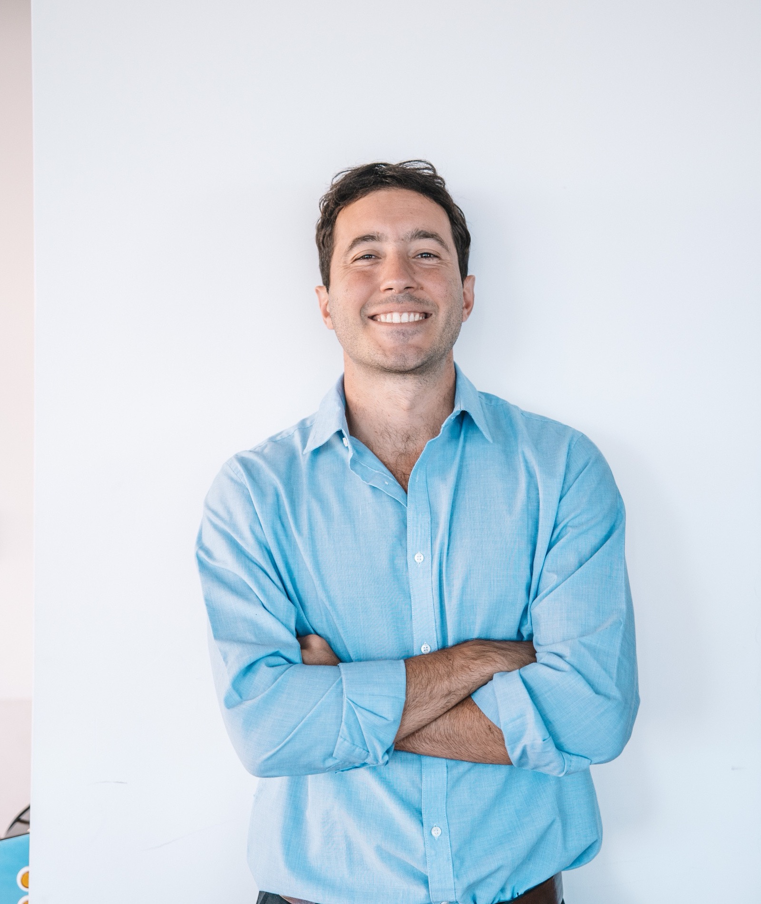
Ingeniero industrial, orientación en mecatrónica. Doy clase en la Universidad Austral.
Founder & Partner de ABN Group. Holding que contiene a ABN Digital, ABN Studio, Hike y Detrics. Mi rol activo es CEO de Hike.
Quiero hacer un podcast de entrevistas largas, en español, para ir profundo en temas difíciles.
Prensa Infobae · Infobae, Las Vegas · La Gaceta · Diario Norte · Billiken · Universidad Austral
Radio, TV y podcasts LN+ · El Doce · Radio con Vos · Radio Sí · Austral, en Spotify · EXCELeINFO · Después de Todo
En cámara
Diciembre de 2024. Habíamos aterrizado de Las Vegas unas horas antes. Seis minutos.
Video: LN+, +Verdad, 11/12/2024. Programa completo
El show
Tecnología, algoritmos, ciencia. Temas que suelen explicarse rápido y por arriba. La idea es lo contrario: dos horas con alguien que los entiende de adentro, hasta llegar a la parte que nunca se cuenta.
Cuatro preguntas que vuelven en cada episodio, a gente muy distinta.
Un cubo se puede resolver de memoria, sin entenderlo. Un modelo de lenguaje puede contestar bien sin saber. ¿Dónde está la diferencia?
Qué hace hoy un algoritmo que hace cinco años no hacía, y qué sigue sin poder hacer.
Miles de horas de práctica terminan en un segundo de intuición. Qué pasa en el medio.
Lo que queda afuera cuando alguien se dedica a una sola cosa.
Frío. Sin música.
Se escucha un cubo girando, rápido. Para.
JP
Gael, cuando resolvés un cubo, ¿estás pensando, o ya no?
Gael
…
JP, a cámara
Tiene 17 años y escribió dos libros. Para resolver un cubo rápido no alcanza con tener buenas manos: hay que memorizar decenas de secuencias y reconocer cuál usar casi sin pensar. Hoy vamos a entender cómo se entrena una cabeza así.
Título.
Los invitados

Episodio 1
Tiene 17. Compite en cubo. Escribió dos libros. Trabajo con él.
Ya grabados
La lista sigue
Todavía no los invité. El podcast no se limita a la Argentina, pero para esta primera etapa elegí gente que vive acá: muy buena en algo difícil y casi nunca entrevistada a fondo. Debajo de cada uno, la pregunta con la que arrancaría.
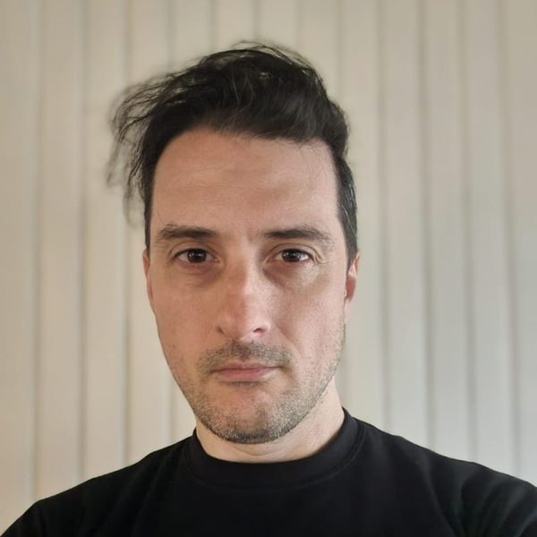
Seguridad
Hacker. En 2007 encontró una falla remota en OpenBSD. Hoy busca bugs con IA.
«¿Se puede escribir software sin agujeros, o cualquier cosa lo bastante compleja termina teniendo uno?»
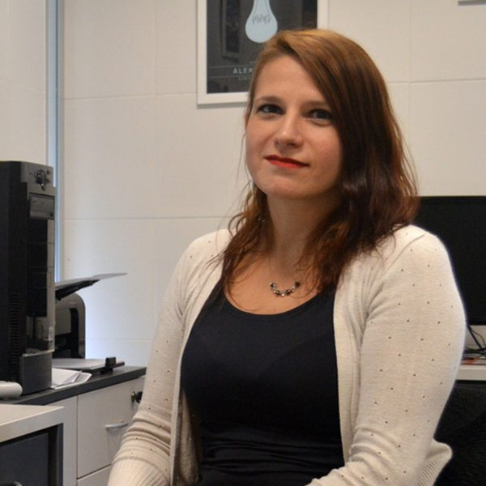
Sueño y memoria
Dirige el Laboratorio de Sueño y Memoria del ITBA. Estudia cómo el sueño cambia los recuerdos y cómo se forman los recuerdos falsos.
«Si un recuerdo se reescribe cada vez que lo traemos, ¿cuánto de lo que recordás de tu vida pasó de verdad?»
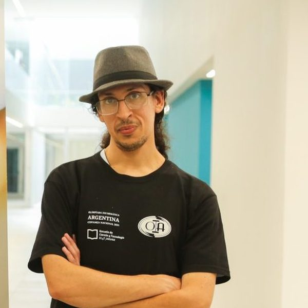
Programación competitiva
Plata en la Olimpíada Internacional de Informática. Llevó ocho equipos a mundiales de programación.
«¿Hay belleza en un algoritmo? ¿Qué separa una solución correcta de una que te parece hermosa?»
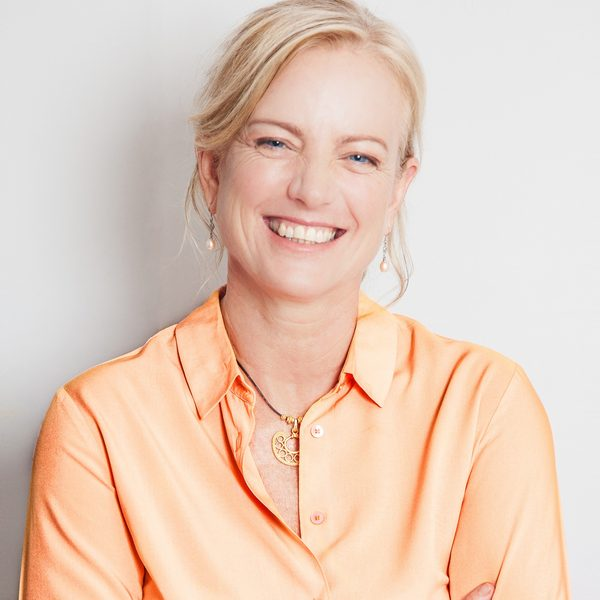
Materia cuántica
Física del Instituto Balseiro, en Bariloche. Desde 2025 es secretaria general de Pugwash, el movimiento de científicos contra las armas nucleares.
«Estudiás la materia a escala cuántica y trabajás para que nadie use una bomba. ¿La física te hizo más optimista o menos?»
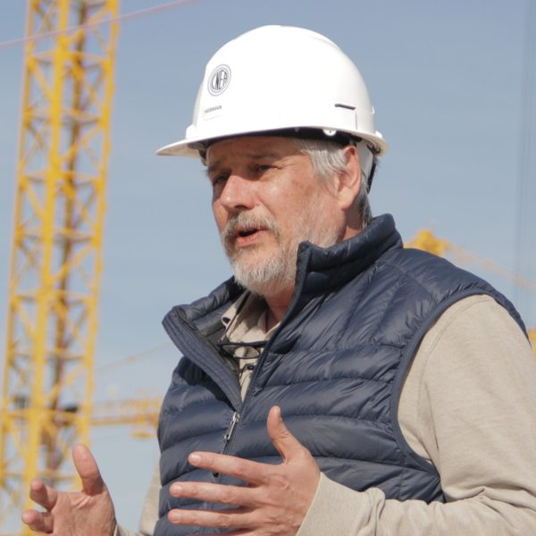
Energía nuclear
Ingeniero nuclear del Balseiro. Gerente del RA-10, el reactor que la CNEA construye en Ezeiza.
«Un reactor se diseña para funcionar décadas. ¿Cómo se decide algo que va a seguir funcionando cuando ya no estés ahí?»
Lenguaje e IA
Investigadora de IA en Córdoba, UNC y CONICET. Estudia cómo los modelos de lenguaje heredan estereotipos, también en español.
«Si un modelo aprende el lenguaje de nosotros, ¿puede llegar a tener menos prejuicios que la gente que lo entrenó?»
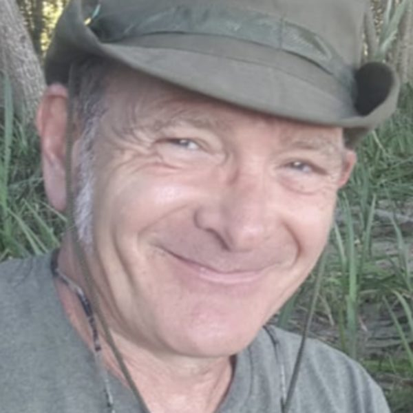
Física del canto
Físico, UBA y CONICET. Modela con ecuaciones cómo cantan los pájaros, y convirtió en sonido lo que hacen mientras duermen.
«Si podés reproducir el canto de un pájaro con ecuaciones, ¿qué parte del canto queda sin explicar?»
Olimpíadas
Entrena desde hace décadas al equipo argentino que va a la Olimpíada Internacional de Matemática.
«Después de tantos años viendo chicos brillantes, ¿qué es el talento matemático? ¿Se ve venir?»
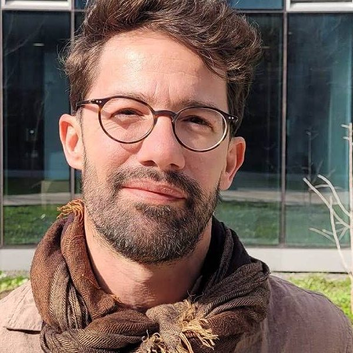
Física cuántica
UBA y CONICET. Dirige un laboratorio que atrapa iones de a uno.
«Controlás átomos de a uno. ¿Qué entendemos hoy de la mecánica cuántica que hace cien años no, y qué seguimos sin entender?»
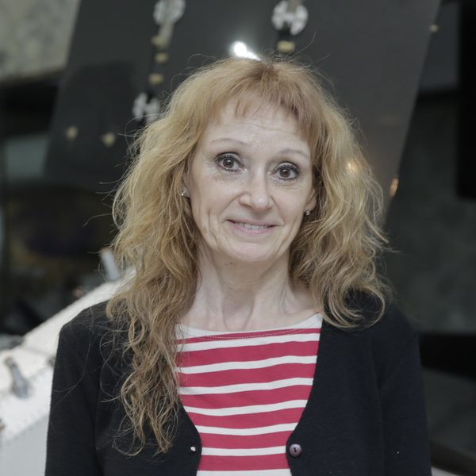
Espacio
Gerenta de Observación de la Tierra en la CONAE. Investigadora principal de SAOCOM, los satélites radar argentinos.
«¿Qué ve un radar desde el espacio que nosotros, parados acá abajo, no podemos ver?»
Agujeros negros
Astrofísico en La Plata, UNLP y CONICET. Estudia agujeros negros y escribe sobre filosofía de la ciencia.
«¿Dónde termina la física y empieza la filosofía, si es que termina en algún lado?»
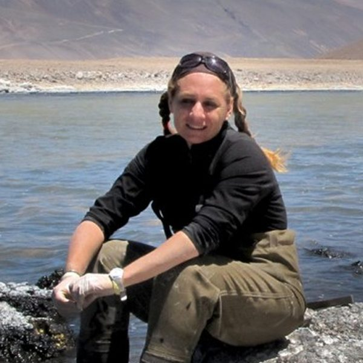
Vida extrema
Microbióloga. Encontró estromatolitos vivos en la Puna, a 3.570 metros, y fundó Puna Bio con esos microorganismos.
«Encontraste en la Puna vida parecida a la de hace miles de millones de años. ¿Qué nos dice eso sobre buscar vida en otros planetas?»
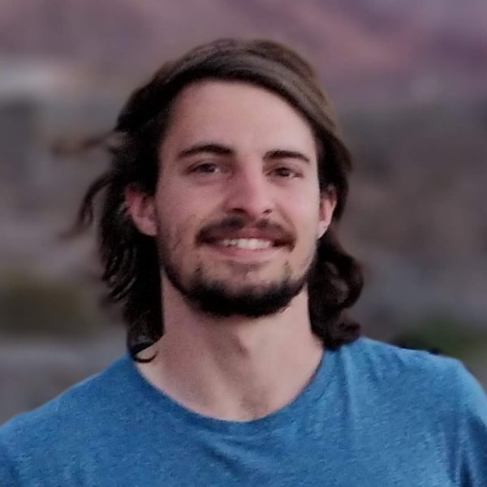
Programación competitiva
Coach de programación competitiva en Rosario. Llevó equipos a siete finales mundiales.
«Entrenaste chicos durante años. ¿Qué cambia en la cabeza de alguien el día que entiende la recursión de verdad?»
Paleontología
Paleontólogo del Museo de La Plata. Dirige las campañas paleontológicas del Instituto Antártico Argentino.
«¿Cómo era la Antártida cuando tenía bosques y reptiles marinos, y qué nos dice sobre el clima que viene?»
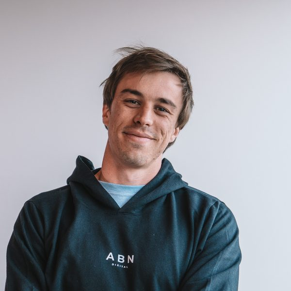
Excel competitivo
Finalista del Mundial de Excel 2024, en Las Vegas. Trabajamos juntos en ABN.
«Cuando mirás un problema y ya sabés cómo resolverlo antes de pensarlo, ¿eso es intuición o es método entrenado?»
Más adelante, también argentinos que viven afueraMelanie Sclar (IA, Meta) · Matías Zaldarriaga (cosmología, Princeton) · Guillermo Cecchi (neurociencia, Nueva York) · Clara O'Farrell (NASA JPL) · Martín Arjovsky (IA, Google DeepMind) · Gerardo Richarte (Satellogic, Barcelona)
Fotos: sitios institucionales y prensa de cada uno.
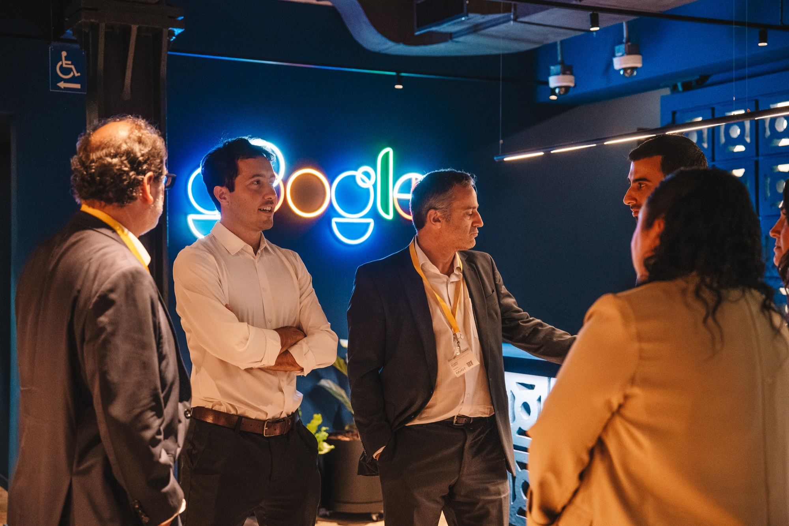
A Sebastián Valverde lo grabé en las oficinas de Google, cuando dirigía Google Hispanoamérica. Hoy está al frente de Google México.
A Martín Sanado, que lleva la estrategia de IA generativa de AWS en Sudamérica, en otra oficina. Cada vez un lugar distinto.
Lo que me falta es un lugar al que volver.
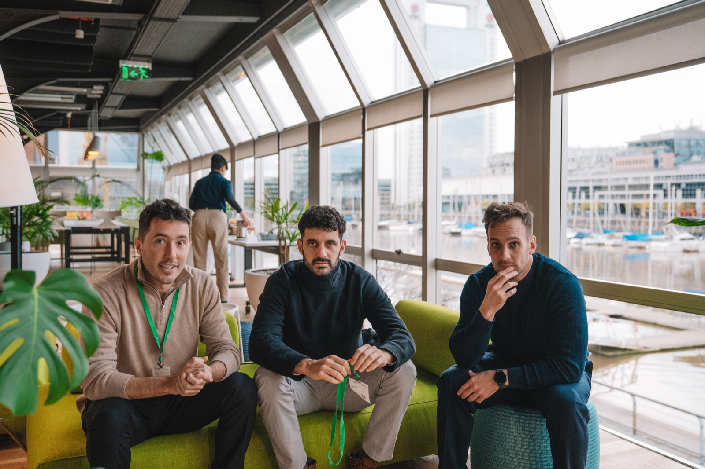
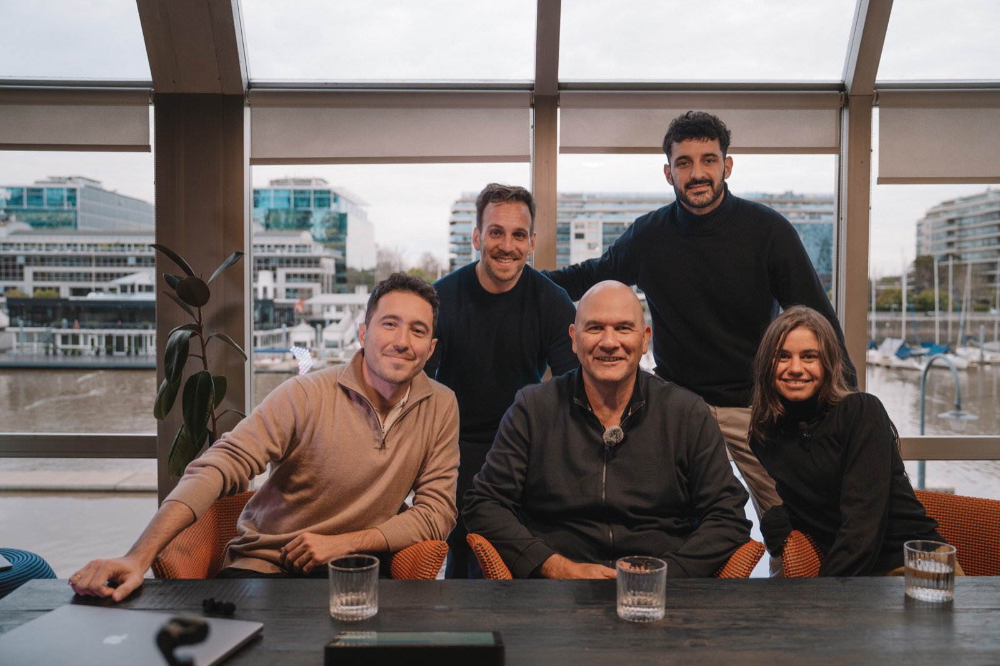
Así pregunto
«La gente de allá habla muy bien de vos. ¿Qué es lo que te hizo cambiar de una a otra?»
A Martín Sanado, sobre Google, Accenture y Amazon. Contestó con una historia: un hostel en Milán, mal internet y una entrevista con Google.
Minuto 13 de 52. Seguir en YouTube
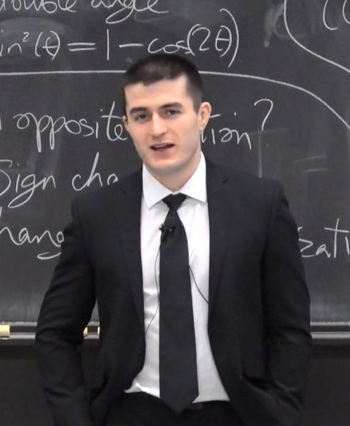
La referencia
Él es doctor en ingeniería eléctrica y de computación. Yo, ingeniero industrial mecatrónico.
Él dio clase en el MIT. Yo doy clase en Austral. Ninguno viene de la tele.
Él lo hace en inglés. Yo lo quiero hacer en español, con mis temas y mis invitados.
Los episodios son cada vez más largos.
Duración mediana por año, en horas.
Hoy sale uno cada tres semanas, más o menos. El audio está en Spotify; el video, en YouTube. Nunca fue exclusive.Números públicos de YouTube, Spotify y el feed del podcast, octubre de 2026.
La audiencia
Futuro en Construcción, de Santiago Bilinkis, fue el 4º podcast más escuchado de Argentina en Spotify en 2025. Lo hace muy bien. Pero no es una entrevista: es él solo, contando un tema.
Entrevistas largas en español también hay. Creativo, Wild Project, Aprender de Grandes.
Yo quiero juntar las dos cosas: estos temas, en charlas largas con quien los conoce de adentro.
El pedido
¿En cuánto podemos ser socios de este proyecto?
juanpablo@abndigital.com.ar